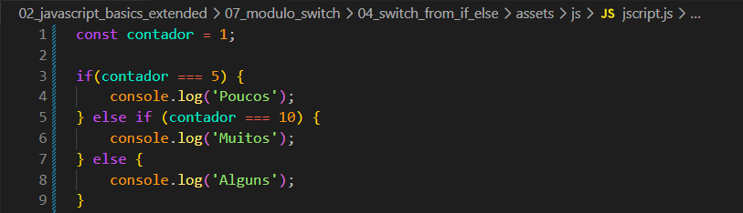
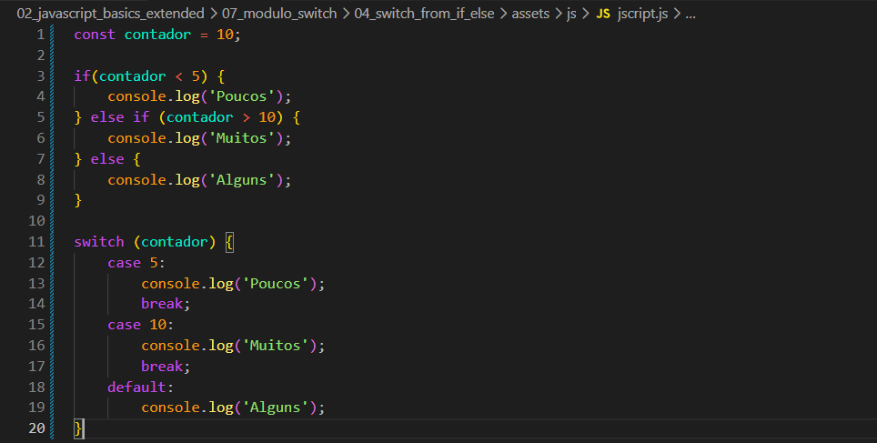
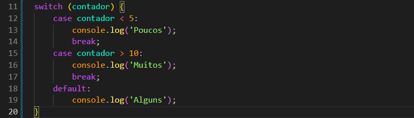
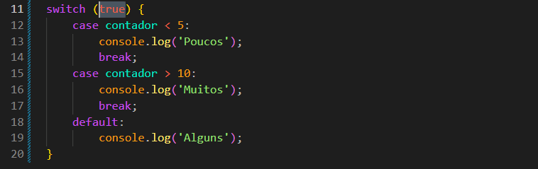

Switch from if else
Intro
Aqui teremos o seguinte codigo como exemplo:

Aqui teremos o seguinte codigo como exemplo:

Declaramos uma variavel contador = 1; depois criamos uma condicional que verificamos se o contador e igual algum dos numeros desejados.
Agora em nosso codigo fizemos uma mesma estrura switch parecida com a de if/else acima porem mudamos a de if/else, para expressoes como < ou >, com isso podemos observar alguns resultados diferentes um do outro, ficando da seguinte forma ambos os codigos:


Com isso conseguimos basicamente os mesmos valores, porem ainda teremos alguns diferenciais em resultado um deles por exemplo seria se nosso valor de contador for 4 enquanto o if/else tera como resultado poucos o switch tera como resultado alguns caindo no (default)
Isso ocorre pois o switch faz comparacoes estritas, ou seja, se estamos passando um numero para o contador. O switch espera que o case a ser avaliado seja um numero tambem, porem o resultado dessa expressao é um boolean.
Para resolvermos essa situacao, oque poderiamos fazer é passar um boolean na avaliacao do switch. Para isso podemos fazer da seguinte forma:
